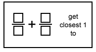
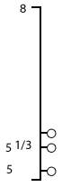
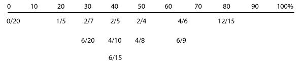

|
|||||
|
TASKS
TO ASSESS CHILDREN'S PERCEPTION OF THE SIZE OF A FRACTION
|
|||||
|
|||||
|
The question of how children perceive the "bigness" of rational numbers is of importance. Addition of fractions like1/3 and 3/5 does not make sense to a child without a quantitative notion of each addend. In order for children to perceive the size of a fraction, it seems necessary that they perceive the ordered pair such as 3/4; as one conceptual entity. This note describes, and summarizes results from several tasks the Rational Number Project has used to investigate children's perception of fractions, and especially of the size of a fraction. The Rational Number Project has involved fourth- and fifth- grade children in extensive teaching experiments. The teaching milieu of these experiments is especially manipulative rich, concept oriented, and involves small groups of children. One device we have used to assess children's fraction concept and their concept of fraction size involved two intersecting plates of red and green color. This task was given to fourth-grade children who were subjects in our teaching experiment and also to a matched comparison group of fourth graders in the regular curriculum. The task was given once about midyear and again near the end of their grade-4 year. Reported here are the strategies which the children used to perform the task. Students were asked to use these intersecting plates to show each one of the fractions 1/3, 1/5, 3/5, and 6/10 as fraction a part of the circular whole. Questions were posed in the form "Make it so that one-third is green." Recorded were the student's behavior, the degree measure of the angle shown, and this student's oral explanation. Children's responses fit into seven categories plus one additional-don't know-as follows. Unit fraction iteration. The child first finds one-fifth then three-fifths by definite iteration.* (0,
0%, 43; 1, 2.5%, 40) Physical partitioning. Children's response is based on the use of imaginary lines which trace unit fractions of the desired fractions. After partition of the whole plate is made, the child moves directly to the original fraction. (11,
25.6%; 2, 5%) Recognized equivalence. Subject recognized that the fraction already displayed was equivalent to the one requested and did not change the display. (28,
65.1%; 18, 45%) Reference to a unit fraction other than 1/2;. Subject compares the desired fraction to a known unit fraction. (0,
0%; 1, 2.5%) Reference to 1/2;. Subject makes a relative comparison of the desired fraction to the known fraction 1/2;. (4, 9.3%; 0, 0%)
(0, 0%, 2, 5.0%) Addition by denominator difference. Subject uses an addition rule to get from a previous position to the desired position; adds differences (e.g., if previous display was at 1/3, 1/3 +2= 1/5, therefore, move 2 times from what was 1/3). (0, 0%, 2, 2/5%) Don't know. Subject is unable to solve or gives a random response and says he/she guessed. (0, 0%; 14, 35%) A second task, Construct a Sum, was given to 16 children late in their grade-5 year who were subjects in our teaching experiments during their grade-4 and -5 years. The first of two versions of this task consisted of numeral cards on which the whole number 1, 3, 4, 5, 6, 7 were written on a form board as shown to the right. The second version used the same form board but numeral cards with 11, 3, 4, 5, 6, 7. Version 1 was presented about 3/4; of the way into children's grade-5 year, and both versions were presented close to the end of this year. In each case, subjects were directed to "put number cards inside the boxes to make fractions so that when you add them the answer is as close to one as possible, but not equal to one." To discourage the use of computational algorithms, subjects were encouraged to estimate, and a time limit of one minute was imposed on the task. After completing the task, subjects were asked to "tell me how you thought in solving this problem."  The deviations from 1 of each subject's responses were computed as percents. The arithmetic mean of the three deviations for each subject was used to define performance categories of high, middle and low scores: High score (n=6), average deviation less than or equal to 10%; middle score (n=3), average deviation between 10 and 30%; low score (n=7), average deviation greater than or equal to 30%. Response explanations were partitioned into five categories which suggest cognitive strategies which children used to perform the task as follows. Correct Reference Point Comparison. Explanations indicate a successful attempt to estimate the constructed rational number sum by using one-half, 1, or some other self-constructed fraction as a point of reference. The spontaneous use of fraction order and equivalence is evident. (n= 11, 6.16%) Mental Algorithmic
Computation. Response explanations indicate that the subject did mental
computation to carry out a correct standard algorithm (e.g., common denominator)
to determine the actual sum of the generated fractions. The spontaneous
use of fraction equivalence and rational number order is also evident
in this category of responses. (n=1, 13.3%) Incorrect Reference
Point Comparison. Response explanations indicate that the subject
attempted to estimate the constructed rational number sum by using one-half,
1, or some other self-constructed fraction as a point of reference. Little
or constrained understanding of fraction equivalence and rational number
order is evident. (n=4, 26.9%) Mental Computation,
Incorrect Algorithm. Responses indicate that the subject used mental
computation based on an incorrect algorithm to compute the actual sum. (n=8, 111.5%) Gross estimate.
Response explanations suggest that the subject made a gross estimate of
each rational number addend, but did not make a comparison to a standard
reference point, and did not use concepts of fraction order and equivalence. (n=4, 22.14%) A third task, Darts, was set up as a video game on an APPLE II computer (Apple Computer, 1979). Each screen in the game consisted of a vertical number line with a randomly generated end mark and another mark at some point on the number line. At three random positions balloons were attached to the number line. The task was to pop the balloons by keying in a fraction or a mixed number to shoot a dart at the corresponding location on the number line. A sample task is shown in the figure below. The number lines generated by the program consisted, by random choice, of one or more units. The Darts game is effective in assessing children's quantitative notion of rational number since it offers a challenging situation in which the size of a rational number is embodied in a length. If a subject's attempt at popping a balloon was unsuccessful, the actual location of the attempted rational number was displayed on the number line. Almost always a subject's next attempt would build on this feedback, so the Darts task is a powerful means for eliciting behavior that gives insights into the cognitive structures acquired by the individual subjects about rational numbers.  To illustrate how a child interacts with this task, we present an anecdote involving a bright fifth-grade child named Kristy who was working on the task presented above.
A fourth task, the gray-levels task, is a complex problem-solving task. We gave this task late in the grade-5 year of children who were subjects in our teaching experiments during their grade-4 and -5 years. Children were presented a gray-level scale that showed 11 distinct gray levels increasing in darkness from 0% (white) to 100% (black) in steps of 10%. Subjects were then given 12 fraction cards with the fractions 0/20, 1/5, 2/7, 6/20, 2/5, 4/10, 6/15, 2/4, 4/8, 6/9, and 12/15. These fractions were to be understood as representing concentrations of mixtures consisting of black ink and water in a way previously explained to the subject (e.g., 2/4 means "2 of 4 parts is black ink" which results in a mixture that is "two-fourths dark"). The task was to order the fraction cards from lightest to darkest and put each at a corresponding gray level in the scale; permitted was placement between two gray levels to allow for finer discrimination. The correct placement of all 12 cards is shown below.  We computed two values to indicate each subject's performance on the task. They were average deviation, d, and a maximum deviation dmax which were computed as follows: d i= [correct location card - subject's location card] and location is defined as in the figure above. These two values, d and dmax give a performance index which reflects children's ability to associate a quantitative value (the gray level) with the fractions involved. The average deviation d for 16 fifth-grade children ranged from 2.1 to 29.6 with a mean average deviation of 12.4. The maximum deviation ranged from 10 to 90 with a mean of 39. A fifth type of task, which we call Construct the Unit, requires the child to construct the unit-whole from a given fractional part. It is the reversal of the problem of finding a fractional part of a unit-whole. A typical task was given as: This [] is 3/5, find the unit-whole (or find 7/5, for example). The task was given to 17 children late in their grade-5 year who were subjects in our teaching experiment which extended across their grade-4 and -5 years. Numerous isomorphic variations of the task were given in five separate one-on-one interviews. The tasks given were of several types: embodiment continuous vs. discrete; perceptual distractor vs. no perceptual distractor; stimulus or response fraction greater than one vs. stimulus fraction less than one and the required response was to fine the unit-whole. A 4 -day lesson dealing with problems of this type preceded the data collection. Children's responses were partitioned into five categories; these suggest the type of strategy children used in their attempt to solve the problem. Unit fraction decomposition and composition. Explanations for responses in this category indicate that the given fractional part was first decomposed into unit fractions (of the form 1/n), and then other fractions, and the unit-whole, were composed by an iteration of the unit fraction. Unit Parts Decomposition and Composition. Explanations for responses placed in this category indicate that the given fractional part was first decomposed into parts corresponding in number to the numerator of the given fraction, then other fractions and the unit-whole, were composed of the requisite number of parts. No Unit-Part or
Unit-Fraction Decomposition. Explanations for responses placed in
this category indicate that the subject gave no awareness that the fractional
part is composed of, or decomposable to, unit-parts or unit-fractions
equal in number to the numerator. Given Fractional Part Used as Unit-Fraction or Unit-Part. Solutions or explanations suggest that the subject used the given fractional part as the unit-fraction or part. Strategies of the first two categories almost always led to a correct solution; responses in the last three were invariably incorrect. Data indicate that: (a) The effect of embodiment type was slightly in favor or continuous embodiments (59% of the responses in the top two categories vs. 51%), (b) the level of performance was higher on items which did not contain a perceptual distractor (78% of the responses in the top two categories vs. 49%), (c) tasks which contained a stimulus fraction or a response fraction greater than 1 were considerably more difficult than ones involving only fractions less than or equal to one (39% of the responses in the top two categories vs. 78%). When the data were pooled across embodiment type, there were a grand total of 378 responses; 56% were in the first two categories and 44% in the remaining three categories. However, for the low scoring subjects, of 124 responses, only 28% were in the first two categories while 72% were in the remaining three categories. For the high scoring subjects, 136 responses were distributed with 87% in the first two categories and only 13% in the other three categories. Still another measure we have used of children's size concept of fraction is their ability to perceive the relative size of the fractions in a pair or a larger set; that is, their ability to determine which of the relations is equal to, is less than, is greater than holds for a given pair of fractions. We have reported results on order and equivalence tasks from 12 grade-4 children who were subjects in our teaching experiments for 18 months during their grade -4 year. The results indicate strategies children use for such tasks for fractions with the dame numerators, same denominators and with neither numerator or denominator the same. For fractions with same numerators we have determined five distinct categories as follows: Numerator and Denominator. This strategy is evidenced by explanations in which the child referred to both the numerators and the denominators, indicating that the same number of parts was present (the numerators) but that the fraction with the large (or largest) denominator had the smaller (or smallest) sized parts. Denominator Only. The explanations associated with this strategy referred only to the denominators of the fractions. Reference Point. In using this strategy, the child compared with given fractions to a third number. In some cases, the explanation indicated that an amount or number of pieces was needed to complete a whole or attain a reference point; in other cases, an amount or number or pieced in excess of a whole or beyond a reference point was specified. Manipulative. The child explained his or her response using pictures or manipulative materials. Whole Number Dominance. The child's explanation suggested the application of a rule that centered exclusively on the values of the denominators. The rule gave an ordering consistent with whole number arithmetic but failed to incorporate the inverse relation between numerator and denominator. For fractions with the same denominators we have observed five distinct strategies: Numerator and Denominator. The child referred to both the numerators and the denominators, indicating that the size of the parts was the same (the denominators) but that there were more parts (the numerators). Reference Point. The strategy is the same as that for fractions with the same numerators. Manipulative. The strategy is the same as that for fraction with the same numerators. Whole Number Consistent. The explanations associated with this strategy suggested that the child ordered the fractions according to the sizes of the numerators. The child may or may not have referred to the denominators being the same and did not make reference tot the size of any parts shown in pictures or materials. Incorrect Numerator and Denominator. The child made an incorrect comparison of the sizes of the parts, inverting the relation between numerator and denominator. For fractions with different numerators and denominators the analysis suggested six strategies. Application of Ratios. The child used ratios to determine the equivalence of the fractions. Reference Point. The strategy is the same as that for fractions with the same numerators and for fractions with the same denominators. Manipulative. The strategy is the same as that for fractions with the same numerators and for fractions with the same denominators. Addition. The child compared fractions by adding to a numerator and a denominator. Incomplete proportion. The child's explanation made use of one ratio in the proportion but did not apply it correctly. Whole Number Dominance. The child's explanation suggested a strategy of making separate comparisons of the numerators and the denominators using the ordering of whole numbers. REFERENCES Behr, M.J., Post,
T.R., & Wachsmuth, I.., (1984 August). Behr, M.J., & Wachsmuth, I., (1982, July). Turning the plates-size perception of rational numbers among 9- and 10-year old children. In A. Vermandel (Ed.), Proceedings of the Sixth International Conference for the Psychology of Mathematics Education. Antwerp, Belgium. Behr, M.J., Wachsmuth, I., Post, T.R., & Lesh, R. (1984). Order and Equivalence of rational numbers: A clinical teaching experiment. Journal for Research in Mathematics Education, 15. Wachsmuth, I., Behr, M.J., Post, T.R. (1983, April). Children's quantitative notion of rational number. Paper presented at the Annual Meeting of the American Educational Research Association, Montreal, Canada. * This gives the number, percent and total number of responses for the experimental and comparison groups respectively. (top) |
|||||